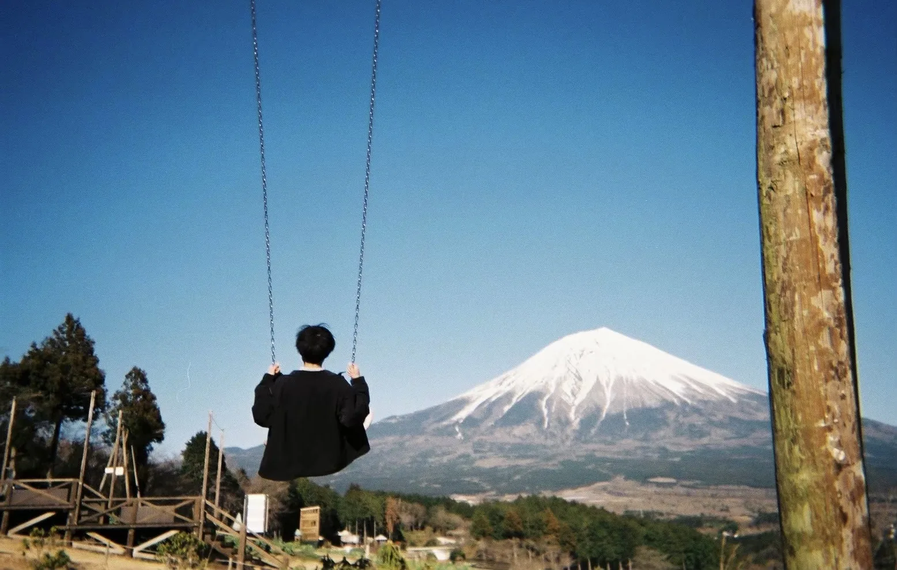
Portfolio
Muroya Keita
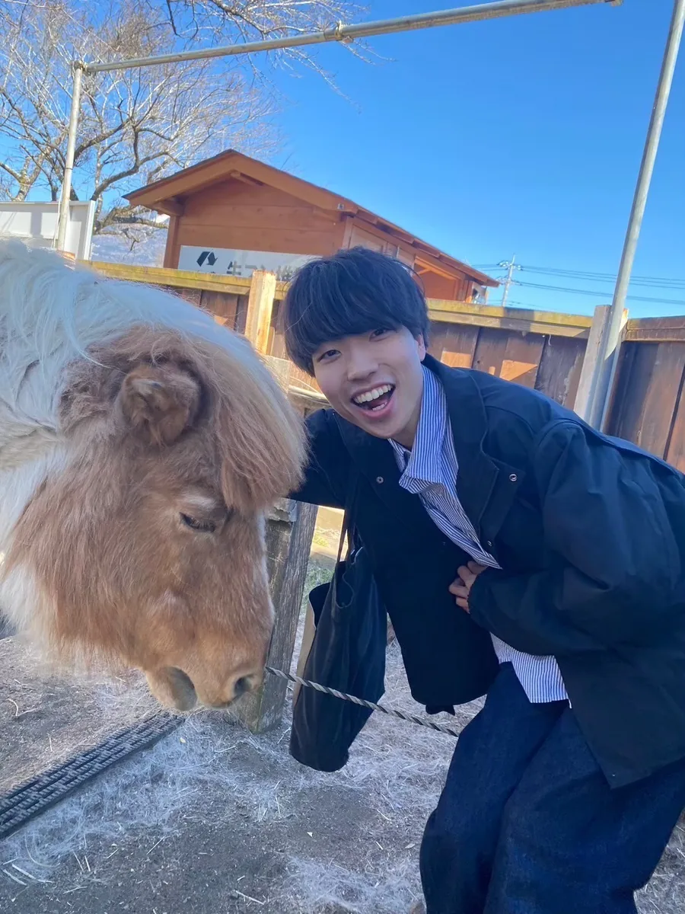
About Me
私についてMUROYA KEITA室谷 佳汰
大阪公立大学大学院 現代システム科学研究科 認知行動科学専攻
滋賀県彦根市で生まれ育ち、現在は大阪に住む大学院生です。
研究室では「人間に優しいAI」をテーマに、ゲームAIや自動運転の開発に取り組んでいます。
転職用プログラミングスクール『DMM WEBCAMP』で3年間講師を務めています。
ドラムとボーカルが趣味であり特技です。動物も大好きです!
My Journey
歩んできた道つくることが好きだった
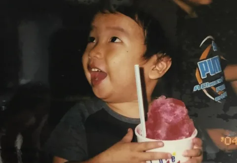
滋賀県彦根市で生まれ育つ。小さい頃からものづくりで人を喜ばせることが好きで、想像力豊かな性格でした。小学生の時にはゲームやWebサイトを自作し、友人や家族に見せて感想を聞いて回ることも。
人の心への興味
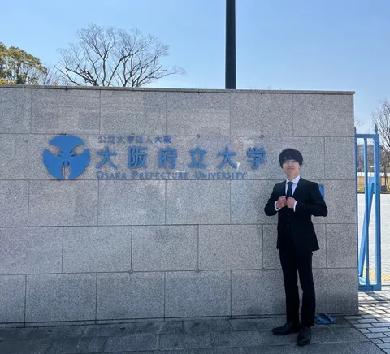
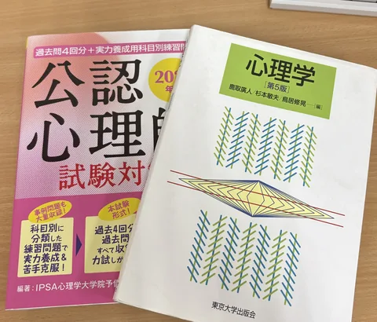
人の心への興味から、大阪府立大学に入学し、臨床心理学を専攻しました。カウンセリングや文献調査を通じて、人を喜ばせるには「深層心理」の存在があることを学びました。
プログラミング講師に
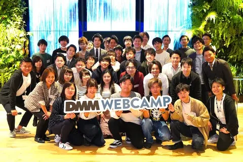
小中学生の時に熱中したプログラミングの楽しさが忘れられず、文系未経験から講師になりました。生徒の悩みを解決しようと作ったアプリが大好評で、技術で人を喜ばせるやりがいを思い出しました。
文系から理系の大学院へ
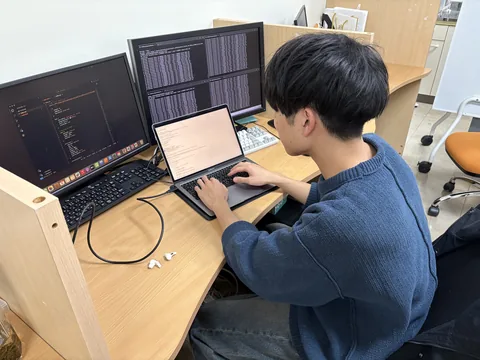
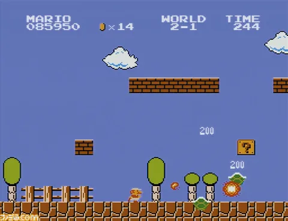
プログラミング講師の経験から、技術によって人の心を動かしたいと考えるようになり、大学院から機械学習・AIゼミへ進学しました。「心理学を活かした、人に優しいAI」をテーマに研究に取り組んでいます。
未来への展望
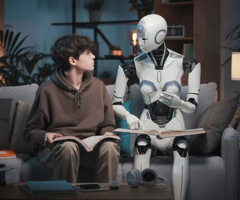
現在は技術力と人間性の融合を目指し、研究活動に取り組んでいます。将来は、単に利便性を追求するだけではなく、人の心に寄り添えるような技術を提供していきたいと考えています。
Previous Works
制作・研究実績Publications
学会発表・論文国際学会 ISIS2025(韓国・清州)にて Best Presentation Award を受賞
「Effects of Group Learning in Deep Reinforcement Learning(深層強化学習におけるグループ学習の効果)」というタイトルで研究発表を行い、Best Presentation Awardを受賞しました。
-
Effectiveness of Experience-Sharing Group Learning in Deep Reinforcement Learning
Applied Sciences (Switzerland), 16 (7)
-
Effects of Group Learning in Deep Reinforcement Learning
26th International Symposium on Advanced Intelligent Systems (ISIS2025), pp. 134-137
-
深層強化学習におけるグループ学習の効果
日本知能情報ファジィ学会 ファジィシステムシンポジウム講演論文集, 41 (0), pp. 212-217
-
深層強化学習における学習済みエージェントによるデモンストレーションの導入タイミングが学習効率に与える影響
日本知能情報ファジィ学会 ファジィシステムシンポジウム講演論文集, 41 (0), pp. 224-229
Hobbies
趣味・課外活動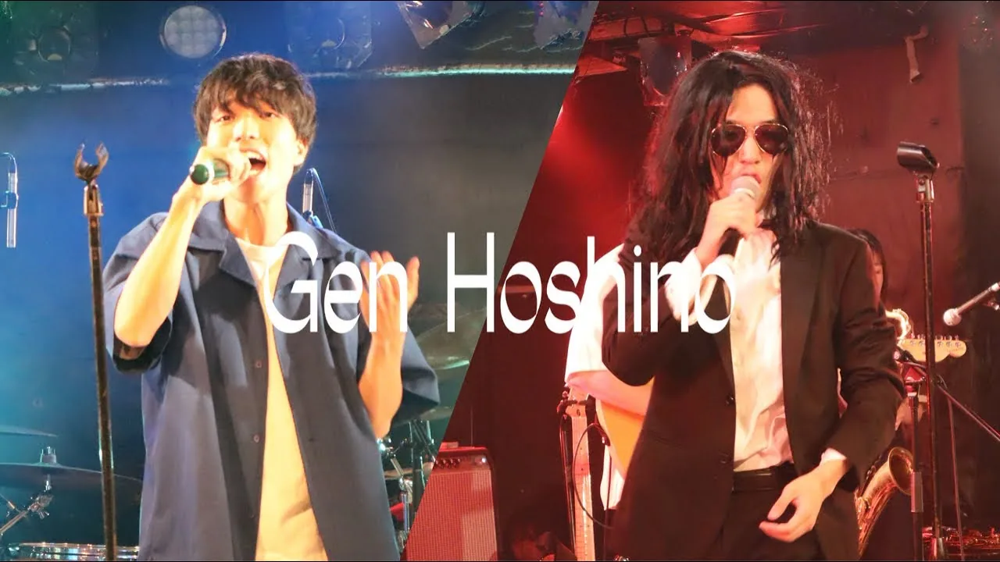
星野源のコピーバンド
バンドでドラムとボーカルを担当。演奏動画をYouTubeで公開中です!
YouTubeで見る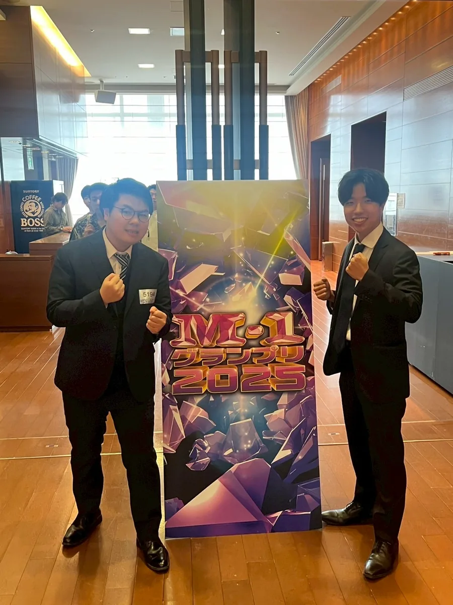
M-1グランプリ2025に出場
漫才コンビを組んで、M-1グランプリ2025に挑戦しました。
Get In Touch
お問い合わせ最後までご覧いただきありがとうございます。
ご質問・ご連絡は、お気軽にメールでお声がけください。